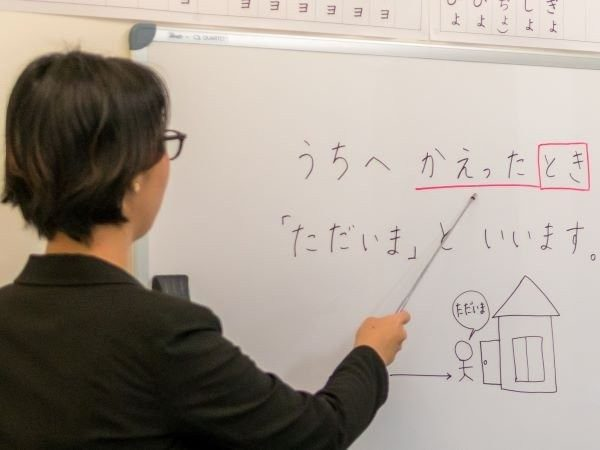
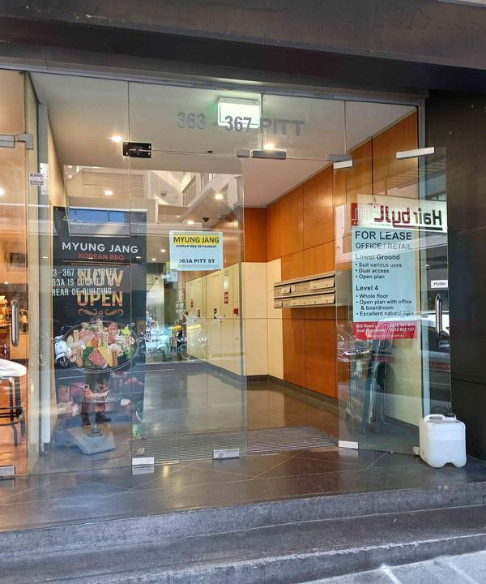
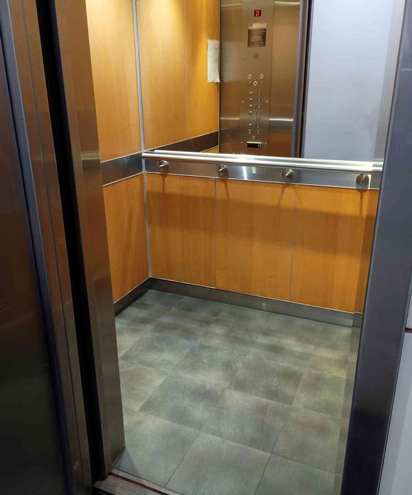

日本語を、
Japanese language lessons in Sydney CBD.
We do group and private lessons, in the classroom and online. From beginner to advanced, 6 days a week, for high school and university students and all adults.

- NativeOur teachers are all native Japanese speakers with teaching certification.
- Around 4Our average group size is around 4 students.
- 50 or 80 minLearn once or twice a week, in a small group or in a private lesson.
初めてfor the first time
New beginner introduction class.
If you have never studied Japanese before, this course is for you. Each timetable is released 3 weeks before the start week. Then, please enrol by one week before.
Classes starting in the week of the 19th of October
For beginners’ lessons we have the following group classes available, and the times provided are our current availability. Please contact us in advance to secure your seat.
Course outline
We will teach you the initial gist to read, write, speak and listen to the Japanese language. New vocabulary and grammar will be constantly introduced and you will learn simple conversation.
Level, aim
- Learn Japanese characters (Hiragana)
- Can have simple conversation to use very basic vocabulary and grammar
- Good preparation before you go to Japan for short holiday
- Duration
- 80 minutes once a week, 8 times, fixed scheduleIf the class becomes to have only one student, the lesson length will be 50 minutes. Or re-arrange the class.
- Lesson fee
- $330
- Eligible
- 15 years old and over
- Study topics
- Daily greeting, Introducing yourself, Numbers, Shopping conversations, Names of basic objects, Time, Places, House/Office, Day/Date expression, Weather, HIRAGANA reading.
- Other things
- Small group class. Study materials provided. The teacher is native Japanese. Instruction, explanation are in English mainly. Of course, practice in Japanese!
階段stairs
Six steps, from beginner to advanced.
Our course focuses on conversation. Of course, there are listening, speaking, reading and writing practices using varieties of materials and some homework. You learn Japanese character, vocabulary, phrase and grammar constantly. This is the core curriculum to build up your Japanese language skill.
Our class activities
- main stream with every second in Japanese
- introduce new vocabulary (words, phrase), Japanese characters
- introduce and explain new grammar structure
- practice
- Repetition, repetition, repetition with many ways
- memorize words
- make sentence
- listen to CD
- watch video
- see pictures, cards
- play game
- answer drills
- Do live conversation
- Moreover challenging, interesting homework!
料金fees
Work out your lesson fee.
Lesson type
Package
Lesson length
When
How often
- 3 to 10 students in a group class
- A half price of private lesson from 2nd person in a private lesson, if you’d like to take lesson with your friend, partner, family
- Textbooks around $50 to $140
See the full price list
Cancellation policy
This is for the 8 & 16-lesson package and casual lessons.
All of these rules below apply to any student enrolled in group or private lessons. This includes students who are purchasing their lessons as part of any 8 or 16-lesson package, casually, or otherwise.
Once any lesson is booked, this is considered to be enrolment in the lesson. All lesson fees are non-refundable.
Private lessons: if you are unable to attend a lesson,
- Prior notice given by student *1 → Shift lesson(s) to next week (maximum 2 times in the term) *2
- No prior notice is required. → Full lesson fee is forfeit by student.
If you need to change your class day and/or time (subject to availability), there will be an administration fee of $22. Students purchasing in our off-peak hour price range cannot reschedule to peak hours.
*1 Student must give notice at least 1 day (business day, by 5 pm) before the lesson
*2 Student purchasing 16-lesson package can shift lesson(s) max. 4 times
試験exam
Japanese Language Proficiency Test.
The JLPT is an international benchmark to assess the Japanese language proficiency of non-native speakers. To study or work in Japan, JLPT result may be required.
- N5the most basic
- N4
- N3
- N2
- N1the most difficult
- When
- The test is held on the first Sunday of December in Sydney every year. The application period is usually around early August until late September.On the first Sunday of July in Canberra
- Where
- The JLPT test is held at the University of New South Wales, Kensington.
- How
- Passing the test requires both achieving an overall pass mark for the total points, and passing each section individually – so one cannot pass by doing well on the written section but poorly on the listening section.
For more information please also visit the JLPT website.
JLPT preparation courses (held in 2024)
JLPT N5 preparation course
This course aims to pass the JLPT N5 exam. The class focuses on doing many drills. And you have to commit to do a lot of homework.
- Tuesdays at 7:10pm, 80 minutes once a week for 9 weeks (October 1st till November 26th in 2024). The day of the week and time is all fixed
- Group class from 3 – 8 people. Less than 3 people may become 50 minutes or not start
- Classroom, in person. 15 years old and over
- Designed for the person who has studied Japanese language for total 150 hours. Need to read Japanese scripts, all hiragana and katakana, know basic grammar with verb conjugation
- Lesson fee $389. Textbook: NIHONGO SO-MATOME N5 $35
- You need to apply for the actual JLPT exam by yourself
JLPT N4 preparation course
This course aims to pass the JLPT N4 exam. The class focuses on doing many drills. And you have to commit to do a lot of homework.
- Thursdays at 6:40pm, 80 minutes once a week for 10 weeks (September 26th till November 28th in 2024). The day of the week and time is all fixed
- Group class from 3 – 8 people. Less than 3 people may become 50 minutes or not start
- Classroom, in person. 15 years old and over
- Designed for the person who has studied Japanese language for total 300 hours. Not necessary but better already passed N5
- Lesson fee $430. Textbooks: NIHONGO SO-MATOME N4 Grammar, Reading and Listening $35; NIHONGO SO-MATOME N4 Kanji and Vocabulary $30
- You need to apply for the actual JLPT exam by yourself
留学study abroad
We help you study abroad in Japan.
There are some Japanese language schools, accommodation, job offers and so on. The length is from one week. The levels are from beginner to advance. There are some holiday packages too.
行き方how to get there
We’ve just moved!! Suite 302, Level 3, 363 Pitt St.
1Enter the ‘363-367 PITT’ building.

2Go up to the 3rd floor by lift.

3Our office is in front of the lift.
質問questions
22 questions, answered.
Q1Do you teach in English or Japanese?
At Japanese Sydney (JS), we use the Direct Method of teaching in our classes mainly. This means that students are immersed in the language, and from the very first class the teacher will speak in Japanese, and you and your class mates will be encouraged to speak in Japanese.
* Except beginner introduction and continue class, and JLPT preparation course
Q2How do I know which level I should enrol in?
If you are unsure about which level of class would suit you, please take free level assessment at reception or online. We'll have a quick conversation and test your Japanese so that we can recommend the right class for you. Please contact us to book an appointment.
Q3How do I enrol?
If you would like to enrol for any of the courses at JS, please contact us as soon as possible. Firstly, contacting us by email is the best way.
Q4How many students are in a class?
All of our group lessons are minimum 3, and maximum 9 students per class. Private lessons are one-on-one with the teacher. And semi-private lesson, which is only your group, is also arranged.
Q5Can I try out a lesson first, before buying an 8 weeks package?
Yes. Single class can be purchased so that you know the course or class before committing to the package.
* Except beginner introduction class and JLPT preparation course
Q6Am I required to purchase a textbook for class?
Yes. Our classes do require students to purchase a textbook; however, depending on your level, a textbook should last you around 40 - 100 lessons worth of classes. Which textbook you will be required to purchase will depend on the class you are enrolled in. Our textbooks are priced from around $50.
* Except beginner introduction class
Q7When are fees due?
Fees are due in full before the first class. A $50 deposit needs to be paid at the time of booking to secure your place for the first time, and then the remaining amount is due on or by the first class. Deposits will be forfeit by the student if they cancel their class(es).
Q8How can I pay my fees?
Fees can be paid in person using cash or eftpos (bank card and credit card, VISA and Mastercard only). Or electric fund transfer (online bank transfer) is fine.
Q9Are there any cancellation fees if I cancel my class(es)?
There is no cancellation fee, but all lesson fees including deposit are non-refundable. We recommend students stay the term end. 8 weeks package may have some option to change the class or lesson time. For further information, please view our cancellation policy.
Q10Can I change my class type after I’ve enrolled? (Eg., from group to private, or from once-a-week lessons to twice-a-week lessons?)
Yes, if your term has not started yet. Notice at least 1 day (business day, by 5 pm) before the lesson is required to change your class type, and if you would like to make any changes for your private lessons during an 8-week invoice period, there will be a $22 administration fee to do so.
Q11Can I change my class time permanently?
Yes, if you take private lessons. If you decide that you will need to change your class time, please let us know as soon as possible. Notice at least 1 day (business day, by 5 pm) before the lesson is required to change your class time, and if you would like to make any changes during an 8-week invoice period, there will be a $22 administration fee to do so.
Q12What happens when my class falls on a Public Holiday?
As no class on public holidays, an 8 weeks package will be extended to cover for the total lesson numbers.
Q13Can I split my 8 weeks package, or extend it if I miss a lesson?
Private lessons have up to 2 weeks extension with prior notice. Please let us know before committing an 8 weeks package.
Q14What happens if I miss a group lesson?
If you miss a group class, you may take a catch-up private lesson to help you make up for it. The fee depends on length, day and time.
Q15Can I attend a different group class if I miss one of mine?
Yes, a casual lesson fee is charged. However, there may not be a class that has the exact progress at that time.
Q16What happens if I miss a private lesson?
If you are going to miss a private lesson, you may shift the lesson later date/week with prior notice at least 1 day (business day, by 5 pm) before the lesson. For further information, please view our cancellation policy.
Q17I want to learn 'Travel Japanese' because I'm planning on going to Japan. Which course is best for me?
For students who are going to be travelling to Japan and want to learn travel Japanese before they go, beginner introduction class will cover various topics including hiragana, self-introductions, numbers, shopping in Japan and asking for directions. Because the course covers these various topics, it will give students a good base with which to understand simple Japanese.
Q18I particularly want to learn 'Business Japanese'. Which course is best for me?
Our course teaches Japanese language with polite form mainly. That is used in normal life and work situation. After moving to higher level, there are various expressions to say politer or respectful and humble forms. They will be used in the business scenes. We also offer private lessons for students who are a little more serious about their study. Both classes group and private are generally taught in a similar way, but obviously with private lessons, you have more scope to decide how and what you learn.
Q19I just want to concentrate on 'Conversational Japanese'. Which course is best for me?
Our course focuses on conversation. We recommend you group class first and seeing how you go. The group course covers reading, writing, listening and speaking, but being with other students provides a friendly environment in which you can practice not only with the teacher, but with other people too! If you find that, after trying a group out, that you would still like to devote more time in class to conversation, then private lessons will be best.
Q20How long does it take to study for the Japanese Language Proficiency Test (JLPT)?
This depends on your abilities, previous study experience, and which level you are aiming to take. Studying for the JLPT is a very big commitment, and JS always recommends students to set aside at least 1 year in order to study for their desired level (N5 - 1). If you are a beginner and would like to take the JLPT level N5 (the lowest level), you will need to set aside at least 1-2 years preparation time.
Q21When is the JLPT conducted in Sydney?
The JLPT is usually conducted once a year in Sydney on the first Sunday of December. Please contact the hosting institution for the test to confirm the date of the test.
Q22How do I enrol to take the JLPT?
Enrolling for the JLPT is a student's responsibility - JS is not allowed to enrol students on their behalf. Students will need to contact the hosting institution and enrol directly through them. Students should also be aware that enrolments for the JLPT are only accepted during a strict time period each year (usually around August/September), and that they will need to contact the hosting institution for exact dates.
連絡getting in touch
Any inquiries, please contact us.
Different people learn Japanese for different reasons: to prepare for a personal or business trip to Japan, to pick up another foreign language as a hobby, to understand manga and anime and more.
- By email
- info-rep@japanesesydney.com.au
- By phone
- 0432 728 790
- Our address
- Suite 302 Level 3, 363 Pitt St Sydney NSW 2000